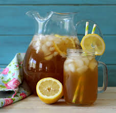
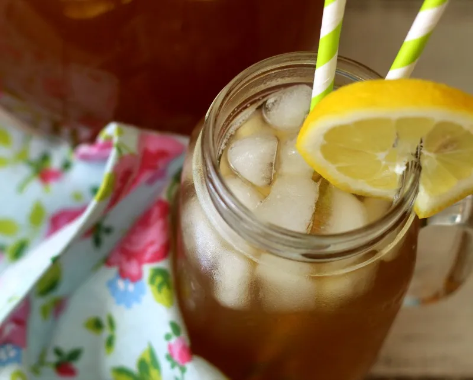
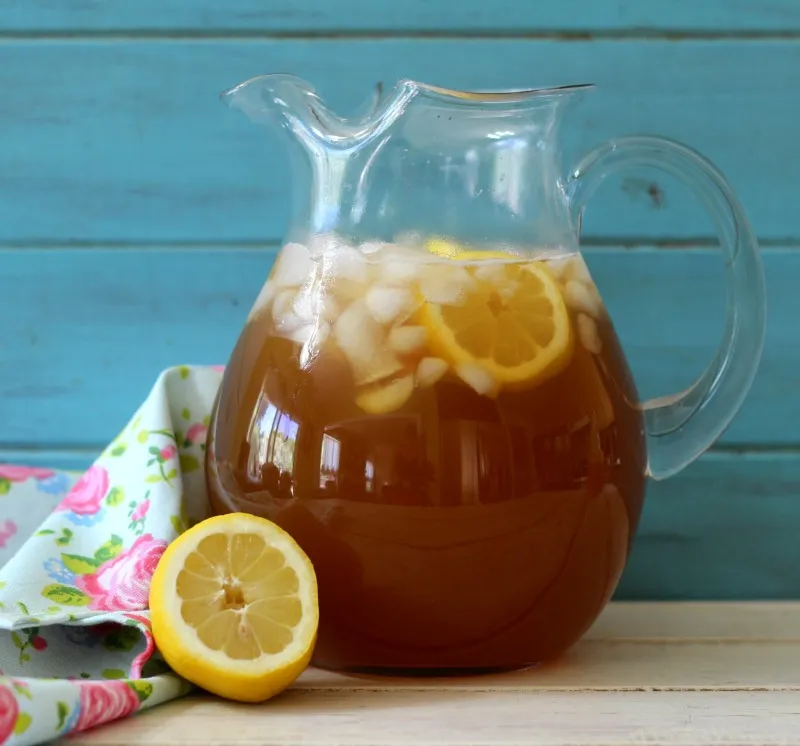
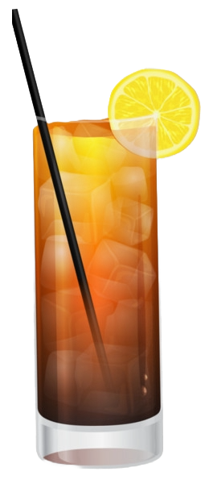

We are a passionate arnold palmer community! Here at We Love Arnold Palmers, we truly, Love Arnold Palmers. If you are new, an arnold palmer is a drink that is made by mixing ice tea and lemonade together! Feel free to add a post for everyone to see! We usually talk about our experiences as Arnold Palmer lovers!



Contribute!
Games
Press on the drink for an interactive game!

Community Posts
The best arnold palmer ratio!
10/03/23
Author: Kristen Gustafson
This is a serious discussion we need to
have. What is your favorite ratio
of lemonade to ice tea? Over the years
I have discovered that the best ratio
is like 3/4 ice tea to 1/4 lemonade.
Or something very close to that. In my
opinion lemonade by itself is really
just not that good, so the ice tea helps
cut the sweetness and sourness of it.
Though it does depend on the brand of
lemonade and ice tea. Some lemonade is
not that sweet so then you need a bit
less lemonade so it becomes more like a
50/50 ratio. But it can go the other way,
when you get a super super bitter tea,
then that changes the ratio the other way.
Personally the ratio is one of the most vital parts of of an arnold palmer.
A bad ratio can make you feel like you are drinking lemonade that
went bad, because most people like the lemonade part way better
than the ice tea part, which again I really
do not get. Anyways, what do y'all think?
What are the best Lemonade/Ice Tea brands??
08/02/23
Author: Mae Apple
So I am just curious for what people think! What are your favorite ice teas and
lemonades to use for making your arnold palmers? So for tea I usually don't have a
preference other than it HAS to be unsweetened. I really cannot do sweetened teas with
the already sweet lemonade. I prefer black tea the most but will ocasionally use
green tea with some lemonade. Particularly I find the peach green tea lemonade
from starbucks delicious, would defienetly reccomend! There are also other variations
of tea that I will use but it has to be pretty much unsweetened for me to drink. My
one exception to this is the passion-fruit ice tea at panera. I will make a mixture
of that, black tea and their lemonade whenever I go.
For lemonades my favorite to buy at home is Newman's Own! I also do not mind simply
lemonade but whenever I use this it has to be at least 3/4 ice tea with it. I also like
lemonades that are "homemade" or crafty at different resturaunts. The less sweetness
the better. I like paneras and am pretty fond of starbucks'. The lemonades I do not like
are the "herman" lemonades, and I usually really hate minute maid lemonade in arnold
palmers. I can make minute maid work but the ice tea has to be very complimentary.
Ordering at resturaunts
12/03/2026
Author: He Who Shall Not be Named
I am just curious to see if anyone else can relate. So I never know how to order an arnold palmer. Sometimes at resturaunts when I say arnold palmer the staff won't know what it is, so then I have to explain and then I feel bad about making them feel like they don't know something because they get confused. I feel like it is not super common knowledge on what an arnold palmer is, so a good defualt would be "ice tea with lemonade", right? WRONG! When a waiter knows what an arnold palmer is they will get super offended that I assumed they didn't. They will reply with something like "Oh honey I know what an arnold palmer is!!". So this is such an anxiety of mine when ordering arnold palmers. What should my default be? I have been sticking to arnold palmer and it seems to mostly work. Such a conundrum!
Best ordering strategies
04/21/2022
Author: Kate Everling
Here are my rankings for resturaunts/cafes based on how much I enjoy their arnold palmers.
Based on how they make it and serve it:
- Red Robin
- Ricardo's
- Starbucks
- Peet's Coffee
- AppleBees
Based on how easy it is to make yourself
- Panera
- Chipotle
- Ivar's Sea Food
- Ezell's
- Pokeworks
These are my least favorite arnold palmers:
- Chic fil a
- Wood's Coffee
- Mercury's
- Cheeseckae Factory
- Cafe on the Ave
Anyways, these are some of the places to go, and some to avoid. In Particular I would really reccomend going to panera. It is so easy to mix your own, and they have very intresting teas to try out! I also would reccomend Starbucks and peets for variations on the typical arnold palmer. And even though mercury's has a lousy regular arnold palmer, there are really interesting tea combos that are worth a try! I gave them a bad score because if I am getting a fruity random barely-tea tea I would go to a boba place or peets. I also want to point out my bad score for chic fil a. It is great for a quick arnold palmer, but I will say I find the lemonade sickenly sweet and the ice tea barely present. Mcdonalds started selling ice tea and lemonade that is not half bad, and it made my list for sheer tolerability and conveience. Chipotle is also similar to panera where there are cool mixing options for making your own. As a former employee, those arnold palmers got me through my shifts. Happy drinking!
Can you say arnold palmer 5 times fast
02/10/2023
Author: Sally Smith
No but seriously can you. Try it right now.
Arnold Palmer Recipe
04/08/2022
Author: Jennifer P.B.
So here is a super great arnold palmer recipee!
- Get a cup!
- Pour the lemonade and ice tea in the cup
That is litterally it. It is by definition just ice tea and lemonade.
Enjoy!